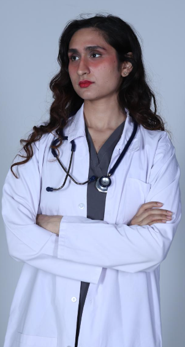

Hospital Therapy
Supervised clinical exposure to medical assessment, management, and patient communication.
MBBS (GENERAL MEDICINE) · CLASS OF 2026
Dr. Sehaj Singh is a medical graduate with a strong academic foundation, hands-on clinical exposure, and a patient-first approach to medicine.

01 / PROFESSIONAL PROFILE
Dr. Sehaj Singh completed the English-medium General Medicine programme at the Institute of Fundamental Medicine and Biology, Kazan Federal University. Her training brings together rigorous medical study, multidisciplinary clinical rotations, and a thoughtful approach to patient care.
With a focus on continuous learning and clear clinical communication, she is preparing to contribute meaningfully in residency and collaborative healthcare environments.
02 / CLINICAL FOUNDATION
Structured internship clinical training across core medical disciplines, with 22 months and 20 days of supervised experience.
Discuss opportunities →Supervised clinical exposure to medical assessment, management, and patient communication.
Clinical training within surgical settings and coordinated care environments.
Rotation experience across neurological and psychiatric care disciplines.
Core clinical skills supporting comprehensive and timely patient care.
03 / ACADEMIC CREDENTIALS
Academic documentation and clinical training records issued by Kazan Federal University are available on request.
Kazan Federal University, Institute of Fundamental Medicine and Biology · 2020–2026
Completed all six academic years and final examinations in General Medicine.
22 months 20 days of internship clinical training · 3,640 total hours.
Character and migration certificates issued by Kazan Federal University.
04 / SUPERVISED RESEARCH
“Department of Psychiatry, Kazan Federal University · Presented April 2025 · Defended May 2025
Supervised by Zalmunin K. Yu., Ph.D.
05 / AREAS OF FOCUS
LET'S CONNECT
For residency, clinical, research, or professional enquiries, please get in touch.